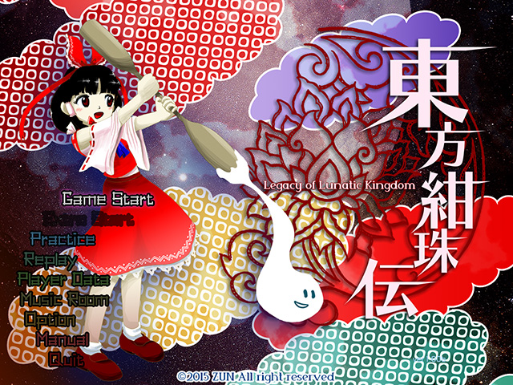

妖怪の山に金属製の蜘蛛が現われる。 それは月の民が作った地上探査車であった。 月の民は植物を枯らしながら静かに侵攻していたのだ。 不思議な事にその姿を感じられるのは人間だけであった。 さあ、君は招かれざる敵を追い返すことが出来るだろうか。 東方紺珠伝 〜 Legacy of Lunatic Kingdom. |

| 東方Project 第十五弾!! とうほうかんじゅでん 「東方紺珠伝 〜 Legacy of Lunatic Kingdom.」は、 人類を救うために反則的なアイテムを使って立ち向かうシューティングゲームとなっています。 ＊このゲームには過激な弾幕シーンが含まれております 小さなお子様や、弾幕アレルギーの方はアレしてください。 |
| ・ダウンロード（体験版、アップデートパッチ） |
| 動作環境 | |
|---|---|
| 必須環境 | |
| ＯＳ | Windows VISTA/7/8 (Windows 10 は対応予定) DirectX ランタイム (June 2010) 以降の最新版がインストールされていること |
| ＣＰＵ | 十分な速度を持った |
| ビデオカード | DirectGraphic 対応の高速なビデオカード(推奨 VRAM 256M以上) |
| 推奨環境 | |
| サウンド | Direct Sound対応のサウンドカード |
| その他 | パッドコントローラ ある程度の弾幕免疫 傲慢な心（推奨） |